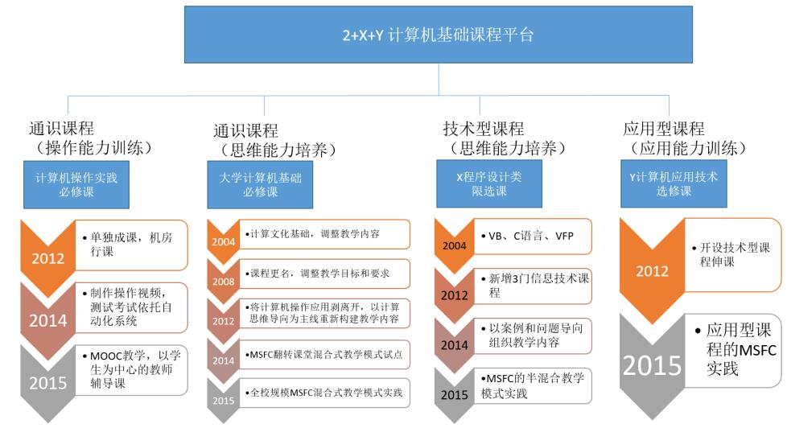
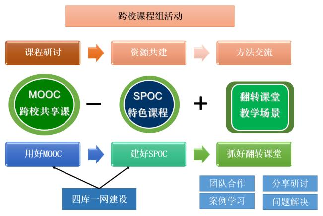
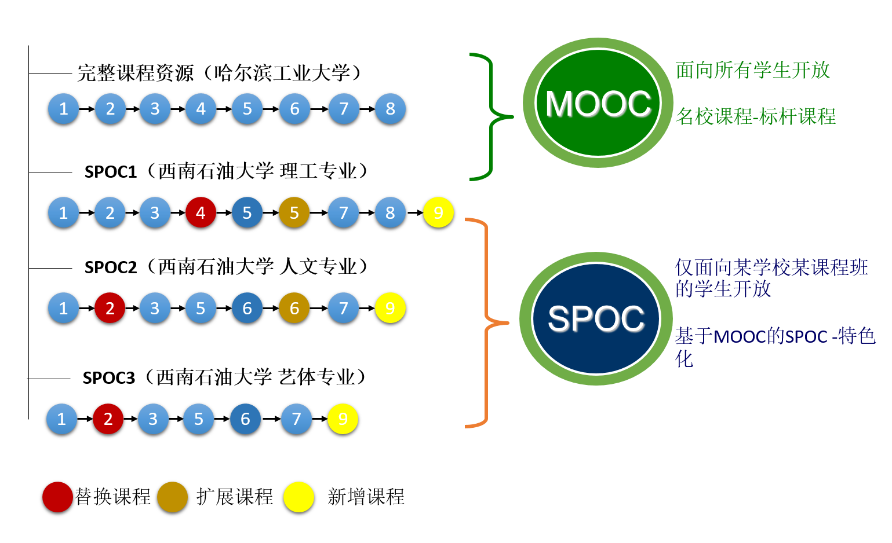
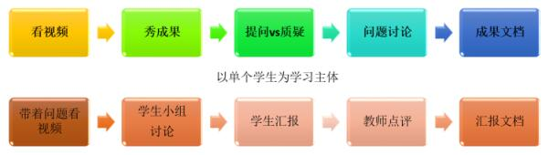
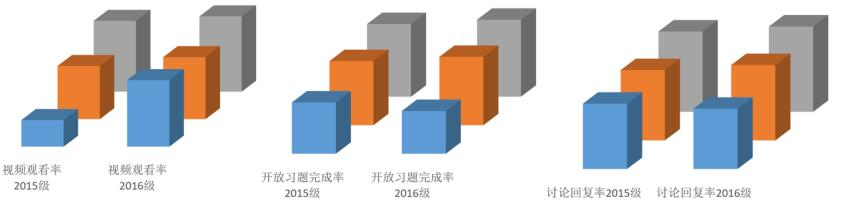
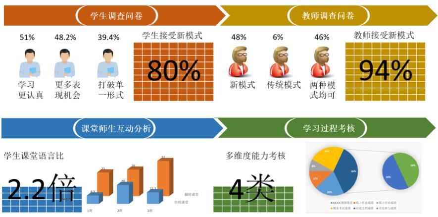

我国在《中长期教育改革和发展规划纲要（2010-2020年）》（简称《教育规划纲要》）中对高等教育的总体部署和发展任务提出加 紧解决高质量多样化人才需要与教育培养能力不足的矛盾，良好教育与资源相对短缺的矛盾。在《教育信息化十年发展规划 （2011-2020年）》（简称《教育信息化规划》）中要求以教育理念创新为先导， 以优质教育资源和信息化学习环境建设为基础， 建设教育信息化，实现教育现代化。
我国高校经过2008年起实施的教学质量与教学改革工程，已经基本打造了一批优质教学资源，教学条件得到了一定的改善。但随着时代的 发展，作为高等教育的基石，课程改革遇到了前所未有的机遇和挑战。对于地方高校而言高质量课程的建设难度高、课程建设的参与难度大、优质课 程资源的使用难落地、而对于重点高校而言高质量课程的延续和推广阻力重重。
面对新挑战和新要求，项目组依托省级资源共享课“大学计算机基础”、省级重点教改项目“MOOC背景下翻转课堂与传统教学融合的教学模 式研究与实践”、“以计算思维能力培养为导向的计算机公共基础多维课程教学体系改革研究与实践”，教育部高教司产学研合作项目“以计 算思维能力培养为导向的计算机公共基础课程教学模式改革研究与实践”和“基于高校联盟的‘计算思维’课程MOOC+SPOC教学模式及翻转课 堂探索与实践”，以大学计算机基础校级团队为依托，从2008年开始以学生为中心，以提高教学质量为目标，通过对新形势下教学模式特 征的研究和探索，率先走出了一条基于跨校课程组的MSFC新型教学模式之路。通过大规模通识课程（大学计算机类）的实践情况和成效分 析，为协调我国高等教育资源发展不平衡，满足多样化人才培养需求提供了一种行之有效的解决方式。
从2004年开始课题组在教学内容、教学方法和教学手段等各方面主要进行了三个阶段的教学探索（图 1）。第一阶段（2004-2008）以教学内容改革为主线， 与四川高校计算机基础教育研究会的各省内高校，以联合出版教材、年会汇报等形式进行教学内容改革交流和研讨，实施理论和操作并重的分类分层教学。 第二阶段（2008-2012）以教学资源建设为重心，与成都理工大学、成都信息学院等多所高校，进行优质资源建设，打造了多门精品课程和资源共享课程。 第三阶段（2012-2016）以新形势下的人才培养为目标，基于跨校课程组研究教学模式的新特征，探索课程的教学新方法和新手段。
课题组根据新形势下人才培养的目标、计算机通识课程的培养定位，结合长期以来课程改革取得的成果，提出了基于跨校课程组的大学计 算机基础类课程MSFC教学模式。该模式以“一本一纲”为核心，基于资源共建共享的跨校课程组，以“三好理念”为抓手，打造“四库一网”，在 “互联网+”上重构课程，以递进式的教学实施方案，引导渐进式和自主式学习，强化过程化配套考核机制，建立双向立体教学效果评价体系， 突出知识传授与能力培养协调共进，促进了学生知识和能力的全面提高和深入发展，形成了“结合优质资源，联合多校建设；基于‘三好理论’， 力行课程再造；强化过程考核，突出人才培养”的课程新模式。
跨校课程组跨校课程组是为了较好解决我国东西部地区教育发展不平衡、西部地区优质资源短缺、培养能力不足等问题的有效方法，也是从课程 改革延续中的自然过渡，现阶段推动实现建设教育信息化和教育现代化的有效手段。
基于中国高校慕课联盟，我校与哈尔滨工业大学、国防科技大学、深证大学、西安交通大学等21所高校组建了“大学计算机”跨校课程组，以资源共 享共建为纽带的跨校课程组，以目标融合，主体融合，资源融合为目标；通过课程研讨、MOOC资源共建共享、SPOC建设方案探索、翻转课堂教学方法 和手段交流学习；创新教育理念，整合优质教育资源，搭建范在的学习环境，共同打造和推进以学生为中心，多样化人才培养的“大学计算机”通识类 课程建设。
时间 |
地点 |
主题 |
参与学校 |
活动成效 |
|
|
|
|
|
|
|
|
|
|
|
|
|
|
|
|
|
|
|
|
|
|
|
|
|
MSFC教学模式指得是基于优质的MOOC资源，创建特色SPOC在线课程，结合翻转课堂，实现线上线下，课前课后，课内课外的多维融合，创造以学生为中心， 跨空间、跨时间、跨学校、跨专业的学习范在环境。优质的MOOC资源是解决建设高质量课程资源难度大的有效手段，特色SPOC课程是解决使用优质课程资源 难度高的有效方式，线下的翻转课堂是在线课程使用难以落地的有效保障。
坚持因地制宜为“本”，多维融合为“纲”。MSFC教学模式改革着力点是立足于从本校实际出发，借助MOOC已有的“广度”资源融合本校的“专度”体系，构建既符合 新时期高等教育形势，又深度契合本校特色的新型教学模式；以“因地制宜”地整合各高校优质课程资源为“本位”，以SPOC、翻转课堂等多样化、多维度的教 学模式融合为“纲领”，从效率和实效出发，构建课程的实施方案。
MOOC的优势在于精品化的教学资源、精细化的教学设计以及信息化的教学评测。“取各校之长，补本校之短”，实现传统课堂单纯“信息传递”向“信息内化”教育 新理念的过渡。取MOOC的“长处”用好“MOOC”，着眼于利用其实现跨校课程组，优化碎片式教学资源的使用。同时，依托“跨校讨论区”等形式促进 在校学习与网络学习同步讨论与学习。学生间的跨区域、跨校互动，实现全新的“自学—互学—群学”的自主学习。
“建好SPOC”是基于“互联网+”下人才培养新目标的“课程再造”，通过MOOC内容分解重组、知识案例扩展和思维训练强化等方式创建特色在线课程。图 3为我校 “大学计算机基础”SPOC课程，是在哈尔滨工业大学标杆课程基础上，结合我校的“四库一网”建设，通过替换、扩展和新增部分教学内容，针对不同专业，精 分不同教学要求和组织，在不同的SPOC中去实现这些诉求，完成教学目的任务，建立了彰显我校特色的专享课程。
在“抓好翻转课堂”环节中，以学生为中心，以单个学生或群体学生为学习主体，转变师生角色，倡导“教师引导、学生自主”的教学新形态。一方面充分调动学 生的自主学习积极性，提高学生的自主学习意识，另一方面狠抓课堂“翻转”后的管理，强化学生学习状态的监控和反馈机制，确保“翻转”后的课堂教学不流 于形式、不走样，收到实效（如图 4所示）。
在《中国教育报》对我校的成果报道中写道：“‘四库一网’是MSFC教学模式的关键点，也是核心点，其具有融合性、多样性和交互性特点，是传统课堂与慕课有 效互动的桥梁，是实现线上自学、线下讨论与课后延伸三者联动的基础性平台。”
大学计算机基础类课程以开放式网络课堂理念，整合校内的课程资源，以超星课程中心平台为依托，结合全自动考试系统，建立了适应教学，满足自主学习、自 我管理，新型教学模式需要的优质课程教学资源库，主要包括案例库、专题讲座库、素材资源库、试题库，内容涉及了课程的教学方法、教学手段、教学 扩展、自我学习等多个环节。通过建立‘四库一网’，打破了传统课堂与开放式网络课堂之间的薄纱，是成功的将传统课程和MOOC牵手的坚实基础。
在“四库一网”建设中，我校2014年与成都理工大学、信息工程学院合作改版了国家十一五规划教材《大学计算机基础（第3版）》及其配套实验指导书，2014年 成功申报了“大学计算机基础”省级精品资源共享课程，2016年主编出版了基于“MOOC+SPOCs+翻转课堂”需求的新形态教材《Visual Basic程序设计》和 《Visual Basic程序设计实验与过级训练》，为四川省第一批新形态教材，被评为教育部大学计算机课程改革项目规划教材。
我校从2014年开始进行MSFS新模式试点，尤其在2015年和2016年在全校大规模的“大学计算机基础”课程中进行了新模式成效研究和分析，较好的完善了MSFC教学模式， 同时也验证了该模式的可行性和有效性。
实施环节 |
实施内容和形式 |
学习形态 |
|||
线上学习部分 |
带着问题看视频（MOOC+补充资源） |
自学 |
|||
“迭代式”测试和反馈 |
|||||
线下小组讨论部分 |
SPOC小组讨论 |
跨校讨论 |
互学+群学 |
||
线下翻转课堂部分 |
现场教学（多种形式） |
||||
汇报 |
答疑 |
辩论 |
… |
||
2015年参加“大学计算机基础”课程学生共计6153人，98个教学班；2016年参加学习的学生共计*人，*个教学班。开展统一的线上 学习，结合线上学习内容设计线下讨论主题实施翻转课堂，并对翻转课堂进行了全程录像。一方面，引导学生的在线学习，调动学生 的学习兴趣；另一方面，线下通过翻转课堂，组织学生分小组，参与线下主题发言、讨论、甚至是辩论，以巩固、拓展知识点。线上 的信息传递和线下的信息内化相互补充，形成整体，真正实现了以学生为主体，极大的调动了学生的自主学习能动性。图 5为不同年 级的实践对比数据。
图 6所示为两次相同规模样本的实践，课题组通过教师和学生双向调查问卷，课堂录像的师生互动分析，线上线下的学习过程考核和跟踪，科学 的验证了MSFC教学模式的有效性。
本成果围绕人才培养，以学生为中心，推进高校课程在新形势下的教学模式改革，主要包含了三大创新点。
1、创新诠释了新媒体时代教学的特征“三重、三多”。以学生培养、资源建设、范在环境搭建为重心；以多维融合（目标融合，主体融合，资源融合）， 多元互补（跨平台，跨空间，跨时间，跨校互补），多重交互（线上线下，跨校跨专业，师师-师生-生生交互）为目标，提出了新形 势下高校教学模式的改革一种方向。
2、创新构建了基于跨校课程组的MSFC教学模式。MSFC教学模式以“因地制宜”地整合各高校优质课程资源为“本”，SPOC、翻转课堂等多样化、多维度的 教学模式融合为“纲”，基于资源共建共享的跨校课程组，以“三好理念”为抓手，力行课程再造，引导“自学-互学-群学”的自主式和 渐进式学习，强化过程考核，突出了“互联网+”下创新的教育理念。
3、基于我校两次大规模MSFC教学模式实践及其实践效果的跟踪分析，论证了该教学模式有效解决了优质资源本土化，满足了新形势下人才培养的要求和高校 发展的趋势，具有较强可复制性，为缓解当前我国中西部地区高等教育资源匮乏提供了一种行之有效的解决方式。
2015年－2016年期间课题组完成了校内校外相结合等多种形式的成果推广。
在我校的“大学计算机基础”、“计算机组成原理”、“操作系统”、“程序设计基础”、“程序设计范式”等多门计算机课程中利用MSFC新型混合 式教学模式开展教学实践。利用多次校级报告和教学沙龙，在我校范围内进行成果推广，得到了学校专家和同行的认可。2016年我 校每个教学院系选择1-2门课程推广MSFC混合模式的教学改革。
基于“MOOC+SPOCs+翻转课堂”混合教学模式的改革与实践，一个重要目的是为众多地方高校探索教学改革路径。因此，在进行教学模式实践的同时， 我们联合中国高校计算机教育MOOC联盟，制定了“中国高校计算机教育慕课联盟MOOC/SPOC+翻转课堂教学使用指南”、 “中国高校计算机教育慕课联盟MOOC/SPOC课程导师认证标准”等相关标准和规范，并依此组织开展或参与了一系列活动（如表 3所示）， 积极地交流和推广该项教改的经验和意义，使之真正普惠于民，得到了很好的反响。
| 时间 | 地点 | 活动名称 | 报告名称 | 形式 |
| 2015.7 | 大连理工大学 | 第四届“计算思维与大学计算机课程教学改革研讨会” | 大学计算机基础新教学模式改革 | 报告 |
| 2015.11 | 天津大学 | 2015年高校计算机课程教学系列报告会 | 利用MOOC开展SPOC+翻转课堂探索体验 | 报告 |
| 2016.1 | 西南石油大学 | 中国高校MOOC联盟大学计算机课程MOOC+SPOCs的翻转课堂实施经验交流会 | 利用MOOC开展SPOC+翻转课堂开展大规模翻转课堂体验 | 报告 |
| 2016.1 | 西南石油大学 | 基于MOOC+SPOCs的翻转课堂教学模式项目实施培训会 | 承办 | |
| 2016.4 | 河西学院 | “中西部高校基于慕课的大学计算机课程改革”项目现场工作会议 | 基于高校联盟的“计算思维”课程MOOC+SPOCs教学模式及翻转课堂探索与实践 | 报告 |
| 2016.5 | 成都信息工程大学 | 四川省高校“教育部—微软2015大学计算机课程改革子项目”工作会议 | 基于高校联盟的“计算思维”课程MOOC+SPOCs教学模式及翻转课堂探索与实践 | 报告 |
| 2016.7 | 西安邮电大学 | 专题报告 | 利用MOOC开展SPOC+翻转课堂 | 报告 |
| 2016.7 | 西安交通大学 | 第3届大中华区MOOC研讨会 | SPOC+翻转课堂的应用 | 报告 |